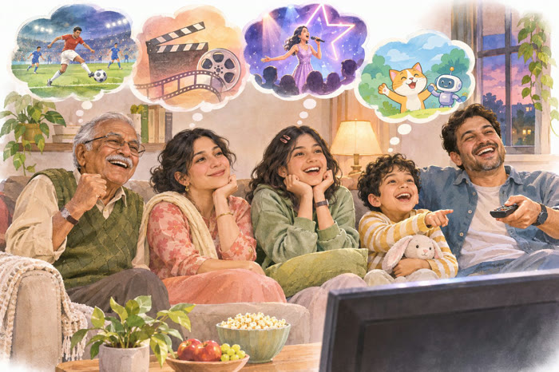

Listen to the text
Speed:

When the internet in our house broke down last Friday, something unusual happened. For the first time in months all five of us sat down in front of one television. Dad found the TV guide in an old newspaper and read it aloud. "Seven o'clock. Channel one: the news. Channel two: a quiz show, "The Smartest Family". Channel three: a wildlife programme about penguins. Channel four: a soap opera, episode 2,417." "The soap opera!" said Grandma. "I have to know if Rosa has found her lost son. I have waited for six years." "Six years for one son?" laughed my brother Yarema. "Let's watch the sports programme at half past seven. There is a review of the football week." "Football is on every day," I said. "At eight there is a talent show. A boy from our town is singing in the final." My little sister Zoriana wanted a cartoon. Mum wanted a talk show about healthy food. Dad wanted the news and then the weather forecast, because he was going fishing on Saturday. "We need a system," said Mum. "Each person chooses for thirty minutes. The youngest goes first." So we watched a cartoon about a blue rabbit. Zoriana laughed, and Yarema laughed even louder, although he tried to hide it. Then came the news and the weather forecast. Rain was promised for the whole weekend, and Dad looked very sad. Grandma's soap opera was next. In thirty minutes Rosa cried four times, and the lost son didn't appear. "Maybe tomorrow," said Grandma hopefully. During the TV ads Yarema explained the plot of the last six years to me. He knew it surprisingly well. The quiz show was the best part. We answered the questions together and beat the family on the screen by three points. Then we watched the talent show, and all five of us voted for the boy from our town. He came second, and Grandma said the jury was unfair. At ten o'clock the internet came back. Nobody moved. A sitcom was starting, and Dad had already made popcorn. "The same time next Friday?" asked Mum. "Only if Rosa finds her son," said Yarema.
Tap any sentence to hear it again.
Сподобалось? На сайті ще більше матеріалів для вчителів!
Reader, презентації, ігри, діагностичні та контрольні роботи до підручників 1-11 класів.
Перейти на сайт materials.allaenglish.com